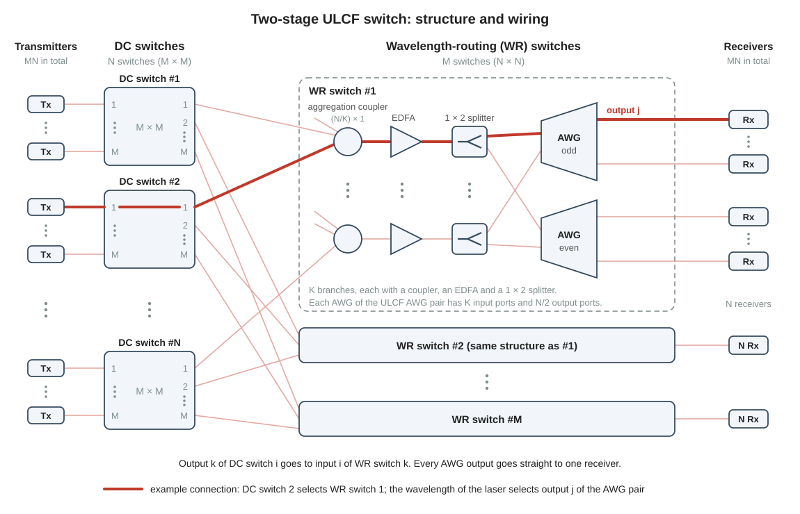
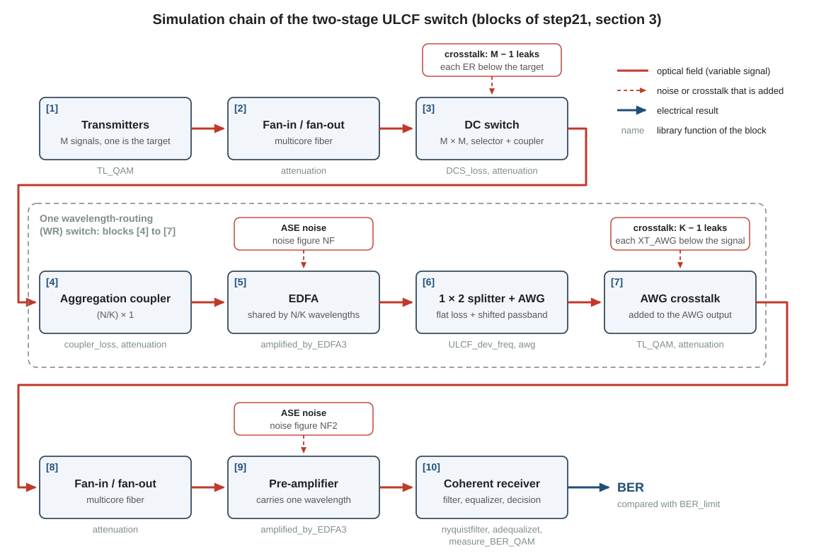
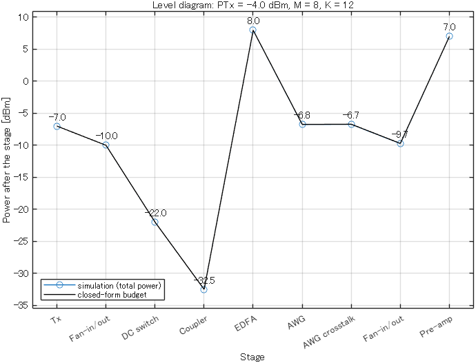
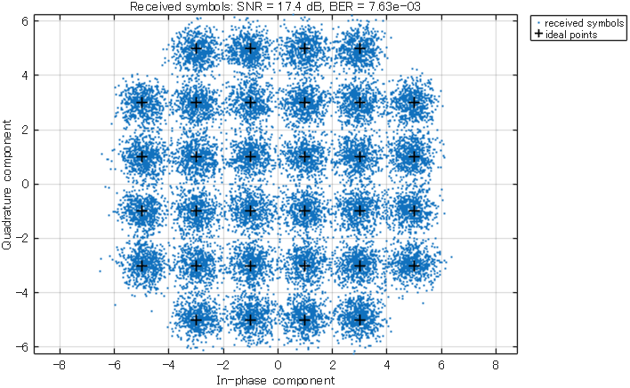
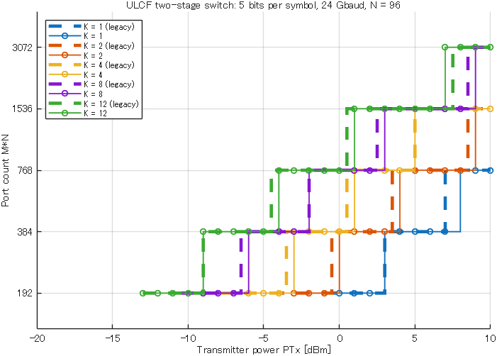

Research
21Two-stage ULCF switch (prior work)
The two-stage ULCF switch is the first of the two switches whose simulation you are given. This page shows how the switch is built, how the script step21_two_stage_one_point sends one signal through it block by block, which noise and crosstalk terms decide the signal quality, and how main_two_stage_ULCF turns single operating points into a curve of port count versus transmitter power.
matlab/main/step21_two_stage_one_point.m, matlab/main/main_two_stage_ULCF.mReference data: matlab/ref_data/legacy_portcount_32QAM.csv, legacy_ber_points.csv, budget_two_stage_ref.csv1. The switch
A two-stage switch combines two kinds of smaller switches (page 11). Its first stage consists of \(N\) delivery-and-coupling (DC) switches of size \(M \times M\). A DC switch is a space switch with a \(1 \times M\) selector at every input and an \(M \times 1\) coupler at every output (page 16). Its second stage consists of \(M\) wavelength-routing (WR) switches of size \(N \times N\). A WR switch sends every signal to the output that belongs to its wavelength (page 17). Every DC switch has one fiber to every WR switch: DC switch \(i\) sends its output \(k\) to WR switch \(k\), where the fiber ends at input \(i\). The switch connects \(MN\) transmitters, each with a tunable laser, to \(MN\) receivers. The number \(MN\) is its port count.
The switch of this page differs from the two-stage switch of page 11 in one place: the inside of the WR switch (Fig. 1). The \(N\) inputs of a WR switch are divided into \(K\) groups of \(N/K\) inputs. Each group has its own aggregation coupler of size \((N/K) \times 1\), its own erbium-doped fiber amplifier (EDFA) and its own \(1 \times 2\) splitter. The splitter divides the light of its group between two arrayed-waveguide gratings (AWGs). Each AWG routes every second wavelength channel to its outputs: seen from input port 1, one AWG routes the odd-numbered channels and the other AWG the even-numbered channels. Both AWGs are uniform-loss and cyclic-frequency (ULCF) AWGs with \(K\) input ports: group \(a\) uses input port \(a\) of both. Page 17 explains these elements. \(K\) small couplers lose less power in front of the EDFA than one \(N \times 1\) coupler, and this is the purpose of the design (page 15). These pages call it the two-stage ULCF switch.
The switch comes from one paper, which this page calls the JOCN paper. The paper writes \(n\) for the number of AWG input ports. These pages write \(K\) (ULCF_deg in the code). Between each EDFA and the pair of AWGs, the paper has a de-interleaver. It notes that a coherent receiver allows a \(1 \times 2\) splitter in place of the de-interleaver, if the higher loss is acceptable. These pages use the \(1 \times 2\) splitter (page 17).
- Nagai et al., "Design and Verification of Large-Scale Optical Circuit Switch Using ULCF AWGs for Datacenter Application," J. Opt. Commun. Netw., 2018

How a connection is set up
Follow the thick line in Fig. 1. A transmitter at DC switch \(i\) is to be connected to the receiver at WR switch \(k\), output \(j\). Two settings make the connection.
- The selector chooses the WR switch. In DC switch \(i\), the selector of this transmitter is set to output \(k\). The signal arrives at WR switch \(k\), input \(i\).
- The wavelength chooses the receiver. Input \(i\) belongs to one of the \(K\) groups, and with it to one input port \(a\) of the AWG pair. The laser is tuned to the wavelength channel that the AWG pair sends from input port \(a\) to output \(j\). With the routing rule that these pages use (page 17, Eq. (4)), this is the channel
awg_channel(a, j, N).
No other element is set for a connection. With one AWG input port (\(K = 1\)) the channel is always \(j\), as on page 11. With \(K\) input ports it also depends on the group of the DC switch.
An existing connection never blocks a new one. Signals share a fiber only behind a coupler (the output coupler of a DC switch or an aggregation coupler), and all signals in one fiber enter the AWG pair at the same input port. They go to different receivers, so their channels differ, and different channels do not disturb each other in a fiber. Two signals on the same channel can meet only at different input ports of the AWG pair, and the AWG pair sends them to different outputs (page 17). A free transmitter can therefore always be connected to a free receiver, whatever connections exist. A switch with this property is strictly non-blocking (page 11). The JOCN paper states this property for the switch with one AWG input port. It introduces the AWG with several input ports as a change that does not reduce the routing flexibility. The argument above uses the routing rule of page 17 to show why.
How many elements
| Element | In the whole switch | Per port | \(M = 8\), \(K = 12\), \(N = 96\) (768 ports) |
|---|---|---|---|
| DC switch, \(M \times M\) | \(N\) | \(1/M\) | 96 |
| EDFA | \(KM\) | \(K/N\) | 96 |
| \(1 \times 2\) splitter | \(KM\) | \(K/N\) | 96 |
| Pair of \(K \times (N/2)\) ULCF AWGs | \(M\) | \(1/N\) | 8 |
The price of the small couplers is the number of EDFAs: \(K\) for every WR switch, not one.
In the code. The three sizes are the variables N (\(N\)), dcs_input_port_num (\(M\)) and ULCF_deg (\(K\)). The scripts contain no wiring and no routing rule. They simulate the transmission of one connection, and they do not call awg_channel. step21_two_stage_one_point prints the port count in the line Switch size : 768 x 768 ports (M*N = 8*96).
2. The transmission chain, block by block
The script step21_two_stage_one_point simulates one operating point: one transmitter power \(P_{\mathrm{Tx}}\) (PTx), one size \(M\) of the DC switches and one number \(K\) of AWG input ports. It follows one connection, the target signal, from its transmitter to its receiver. Figure 2 shows this path as ten blocks. The block numbers are those of section 3 of the script (% [1] Transmitters to % [10] Coherent receiver and BER) and of the printed power table.
The simulation holds one polarization of one wavelength channel as a complex field (page 12). The other signals of the switch are not simulated completely. They appear only where their light falls on the wavelength of the target signal: as leaks in the DC switch (block [3]) and in the AWG (block [7]). The two amplifiers add amplified spontaneous emission (ASE) noise (blocks [5] and [9]).

step21_two_stage_one_point. The numbers are the block numbers of the script. A red frame is a disturbance that a block adds to the target signal. The gray names are the library functions that a block calls.| Block | Element | Effect on the target signal | Parameters | Functions |
|---|---|---|---|---|
| [1] | \(M\) transmitters at one DC switch; the middle one sends the target signal | sets the power to PTx - 3 dB = -7 dBm (one polarization) | PTx = -4 dBm, mod_flag = 5, up = 2, baudrate = 24e9 Hz, rolloff = 0, pol_flag = 1 | rcosfilter, TL_QAM |
| [2] | Fan-in and fan-out devices of a multicore fiber | -3 dB | fiber_flag = 1, Fan_in_loss = 1.5 dB, Fan_out_loss = 1.5 dB | attenuation |
| [3] | DC switch, \(M \times M\) | -12 dB; adds \(M - 1 = 7\) leaks, each 36 dB below the target signal | dcs_input_port_num = 8, dcs_ex_ratio = 36 dB | DCS_loss, attenuation |
| [4] | Aggregation coupler, \((N/K) \times 1\) | -10.5 dB | N = 96, ULCF_flag = 1, ULCF_deg = 12 | coupler_loss, attenuation |
| [5] | EDFA of the WR switch | +40.4 dB; adds ASE noise; the output limit is 20 - 3 - 9.03 = 7.97 dBm | edfa_sat1 = 20 dBm, NF = 5 dB, signal_interval = 50e9 Hz | amplified_by_EDFA3 |
| [6] | \(1 \times 2\) splitter and ULCF AWG | -12.5 dB flat loss and -2.2 dB from the passband, whose center is 28.5 GHz away from the carrier | splitter_loss = coupler_loss(2) = 3.5 dB, AWG_loss = 9 dB, FWHM_AWG = 66.6e9 Hz, flg_NWDM = 1 | ULCF_dev_freq, awg |
| [7] | AWG crosstalk | 0 dB; adds \(K - 1 = 11\) leaks, each 32 dB below the reference power sigpw, which is the power inside the signal band at the AWG output | AWG_XT = 32 dB | TL_QAM, attenuation |
| [8] | Fan-in and fan-out devices again | -3 dB | as block [2] | attenuation |
| [9] | Pre-amplifier of the receiver | +16.7 dB; adds ASE noise; the output limit is 10 - 3 = 7 dBm | edfa_sat2 = 10 dBm, NF2 = 4 dB, signal_interval | amplified_by_EDFA3 |
| [10] | Coherent receiver | rectangular filter with the width of the symbol rate, equalizer with 17 taps, decision, count of the bit errors | Morder = 16, BER_limit = 1e-2 | nyquistfilter, adequalizet, measure_BER_QAM |
The earlier pages explain the elements and show their code lines: page 13 the transmitter (block [1]), page 16 the DC switch and its leaks (block [3]), page 15 the two amplifiers (blocks [5] and [9]), page 17 the WR switch (blocks [4], [6] and [7]) and page 14 the receiver (block [10]). The loss of the DC switch is \(4\lceil\log_2 M\rceil\) dB, and the loss of the coupler is \(3.5\lceil\log_2 (N/K)\rceil\) dB (page 12).
Both amplifiers work at a fixed output power. The script chooses each gain so that the field reaches its share of the saturation output power (page 15, Eq. (4)). For the EDFA the share is 20 dBm, minus 3 dB for the one polarization, minus \(10\log_{10}(N/K)\) = 9.03 dB for the 8 wavelengths that this EDFA carries. The pre-amplifier carries one wavelength, so only the 3 dB are subtracted. This share is the output limit of the amplifier. It holds for the signal together with the ASE inside one channel spacing of 50 GHz. Both calls of amplified_by_EDFA3 pass signal_interval as their seventh argument, and the function scales the signal and the ASE down a little, so that the two together have the output limit (page 15). A loss before an amplifier therefore does not lower the power after it. It lowers the signal-to-noise ratio.
Settings of the earlier study
The parameter values in section 1 of the script are those of the earlier laboratory code that the script follows. The scripts call it the legacy code. Three of its settings do not come from the switch of the JOCN paper. They describe the system of the study for which that code was written; this page calls it the earlier study. Take them as given.
- Signal. 32QAM at 24 GBd in both polarizations (
mod_flag = 5,baudrate = 24e9,pol_flag = 1). The simulation of the JOCN paper used QPSK at 32 GBd in both polarizations. - Multicore fiber (
fiber_flag = 1). A multicore fiber has several cores, and each core guides its own light. A fan-in device connects single-core fibers to the cores at one end, and a fan-out device separates them again at the other end. The script charges 1.5 dB for each device and applies the pair twice: before the DC switch (block [2]) and after the AWG (block [8]). Withfiber_flag = 0both blocks have 0 dB. - Quasi-Nyquist WDM (
flg_NWDM = 1). In the earlier study one slot of the wavelength grid, 50 GHz wide, holds two signals of 24 GBd side by side, so each carrier lies 12.5 GHz from the center of the slot. The passband of the AWG is centered on the slot. The script therefore places the passband 12.5 GHz from the carrier and adds the passband-center deviation of the worst AWG input port (page 17):shift = 12.5e9 + dev_freq, which is 28.5 GHz for \(K = 12\). The simulated band reaches only 24 GHz to each side of the carrier (Fs = up*baudrateis 48 GHz), so the center of this passband lies outside the simulated band. This does not matter. The signal sees only the slope of the passband over the signal band, and there the mask of the AWG has the same values for everyup. Only one of the two signals is simulated. Withflg_NWDM = 0the script setsshift = 0: the passband is centered on the carrier.
In the code. The chain is the part of the script between the comment lines % ---- chain begin ---- and % ---- chain end ----. The same lines stand inside the loops of main_two_stage_ULCF. One variable, signal, holds the field, and every block overwrites it. Up to block [3] it is a matrix with one input signal of the DC switch in each column. The DC switch adds the columns, and from there on signal is one column. After block k the script stores the power in stage_power(k).
3. The noise and crosstalk budget
The receiver decides correctly if the signal-to-noise ratio (SNR) of the received symbols is high enough. For 32QAM, the receiver of the simulation needs about 17 dB at the FEC limit. The FEC limit is a bit error ratio (BER) of \(10^{-2}\): up to this BER, forward error correction (FEC) removes the errors (page 14). The demo of page 14 measures 17.06 dB. Four disturbances lower the SNR of the target signal: the ASE noise of the EDFA, the leaks of the DC switch, the leaks of the AWG and the ASE noise of the pre-amplifier. They are independent of each other, so their powers add. Dividing the sum by the power of the target signal gives
The five ratios in Eq. (1) are plain numbers, not values in dB. Each ratio on the right side is the SNR that one disturbance alone would give. \(\mathrm{SXR}\) is the signal-to-crosstalk ratio: the power of the target signal divided by the power of all leaks of one kind (page 16). The total SNR is always below the lowest of the four ratios, so the lowest one limits the switch.
Each ratio can be estimated by hand, in dB (Table 3). The first one needs the power of the channel at the input of the EDFA. Every element before the EDFA is a loss, so the losses are subtracted (page 12):
The number 3 is the loss of the fan-in and fan-out devices in dB. For the default point Eq. (2) gives -4 - 3 - 12 - 10.5 = -29.5 dBm. The script prints -32.500 dBm after block [4], because it follows one polarization, which has half of the channel power.
| Term | Rule by hand [dB] | Where it comes from | By hand [dB] | Script [dB] |
|---|---|---|---|---|
| ASE of the EDFA, \(\mathrm{SNR}_{\mathrm{EDFA}}\) | \(P_{\mathrm{EDFA,in}} + 50.12\) | page 15, Eq. (3), for 24 GBd and NF = 5 | -29.5 + 50.12 = 20.62 | 20.63 |
| Leaks of the DC switch, \(\mathrm{SXR}_{\mathrm{DC}}\) | \(\mathrm{ER} - 10\log_{10}(M-1)\) | page 16, Eq. (2) | 36 - 8.45 = 27.55 | 27.55 |
| Leaks of the AWG, \(\mathrm{SXR}_{\mathrm{AWG}}\) | \(\mathrm{XT}_{\mathrm{AWG}} - 10\log_{10}(K-1)\) | page 17, Eq. (6) | 32 - 10.41 = 21.59 | 21.27 |
| ASE of the pre-amplifier, \(\mathrm{SNR}_{\mathrm{pre}}\) | \(P_{\mathrm{pre,in}} + 51.12\) | page 15, Eq. (3), for 24 GBd and NF2 = 4 | -6.82 + 51.12 = 44.30 | 44.08 |
| All together, \(\mathrm{SNR}\) | Eq. (1) | 17.59 | 17.47 |
The constants 50.12 and 51.12 in the two ASE rules are 55.12 minus the noise figure in dB: for \(B\) = 24 GHz, the term \(h\nu B\) of page 15, Eq. (3), is -55.12 dBm. Read \(P_{\mathrm{pre,in}}\) from the power table of the script (section 4): after block [8] the target signal has -9.821 dBm in one polarization, so the channel has -6.82 dBm. This is the SNR part of the output of step21_two_stage_one_point with its default parameters:
SNR contributions in the signal bandwidth [dB]
ASE of the EDFA 20.63
crosstalk of the DC switch 27.55
crosstalk of the AWG 21.27
ASE of the pre-amplifier 44.08
all together (budget) 17.47
simulation 17.40
(noise gain of the equalizer behind the AWG: 0.27 dB)The four terms and the line all together (budget) are the closed-form budget of the script: section 6 of the script evaluates Eq. (1) with formulas. The line simulation is the SNR that section 4 of the script measures on the received symbols. The two agree within 0.07 dB. The rules by hand of Table 3 differ from the script by up to 0.3 dB, mainly because of the effect in the last printed line. The passband of the AWG is not centered on the signal, so it tilts the spectrum of the signal. The equalizer of the receiver removes the tilt. In doing so it raises everything that was added after the AWG, that is the AWG leaks and the ASE of the pre-amplifier, by 0.27 dB (page 17).
Which term limits the SNR
Table 4 lists the terms at six operating points. Each row is one run of step21_two_stage_one_point with other values of PTx, dcs_input_port_num and ULCF_deg.
| Row | \(P_{\mathrm{Tx}}\) [dBm] | \(M\) | \(K\) | \(\mathrm{SNR}_{\mathrm{EDFA}}\) | \(\mathrm{SXR}_{\mathrm{DC}}\) | \(\mathrm{SXR}_{\mathrm{AWG}}\) | \(\mathrm{SNR}\) | BER |
|---|---|---|---|---|---|---|---|---|
| 1 | -10 | 8 | 12 | 14.63 | 27.55 | 21.17 | 13.58 | 5.247e-02 |
| 2 | -4 | 8 | 12 | 20.63 | 27.55 | 21.27 | 17.47 | 7.630e-03 |
| 3 | 10 | 8 | 12 | 34.63 | 27.55 | 21.31 | 20.21 | 4.600e-04 |
| 4 | 7 | 32 | 12 | 23.63 | 21.09 | 21.27 | 17.07 | 9.440e-03 |
| 5 | 20 | 64 | 12 | 32.63 | 18.01 | 21.25 | 16.21 | 1.618e-02 |
| 6 | 7 | 8 | 1 | 17.63 | 27.55 | Inf | 17.13 | 1.009e-02 |
- Low power: the ASE of the EDFA limits. This term follows Eq. (2): it rises by 1 dB for every dB of transmitter power and falls by 1 dB for every dB of loss before the EDFA. In row 1 it is the lowest term by far, and the BER is five times the FEC limit. More power helps here.
- High power: the leaks limit. The two crosstalk terms do not depend on the power, because a leak rises together with the target signal (page 16). From row 2 to row 3 the power rises by 14 dB, but the total SNR rises only by 2.7 dB. For \(M = 8\) and \(K = 12\) the two crosstalk terms together allow 20.4 dB at most, whatever the power.
- Large switches: this upper limit falls. The term of the DC switch depends only on \(M\). From \(M = 8\) on it falls by a little more than 3 dB each time \(M\) doubles. At \(M = 32\) the leaks of the DC switch are as strong as the leaks of the AWG, and together they allow 18.2 dB. For a total of 17.06 dB, the ASE term must then reach about 23.5 dB (row 4). At \(M = 8\) about 19.8 dB is enough. At \(M = 64\) the two crosstalk terms allow only 16.3 dB, less than 32QAM needs: row 5 fails with a transmitter power of 20 dBm.
- The AWG leaks are the price of a large \(K\). With one input port there are none (
Infin row 6). With 12 input ports there are 11, and their term stays near 21.3 dB at every power and every \(M\). - The pre-amplifier does not limit this switch. Its term is 34.6 dB or more in every row, far above the other terms. The power at its input hardly depends on \(P_{\mathrm{Tx}}\) and \(M\), because the EDFA in front of it works at a fixed output power. This changes on page 22, where a third-stage switch with a large loss follows the EDFA.
The switch has two limits. Noise limits it at low power: every dB of transmitter power, and every dB of loss that is removed before the EDFA, raises the SNR by 1 dB. Crosstalk sets an upper limit of the SNR that no transmitter power removes, and this limit falls when \(M\) or \(K\) grows.
4. Run one operating point
In MATLAB, make the folder matlab the current folder and run setup_path (once per MATLAB session). Then run step21_two_stage_one_point as a whole file: type its name, or open it and press F5. The run takes a few seconds. It prints two tables and two lines that begin with Self-check, and it opens two figures.
Open the script in the editor and read it next to Table 5.
| Section | What it does |
|---|---|
| 1 | Sets all parameters, one per line, each with its meaning and unit. Three notes explain up, rolloff and ULCF_flag = 0. |
| 2 | Calculates the values that follow from the parameters: Mary = 32 constellation points, the sampling rate Fs = 48e9 and the transmit mask Hrcos (from rcosfilter). |
| 3 | The chain: blocks [1] to [10] of Fig. 2. The result is the variable BER. |
| 4 | Prints the operating point and the BER. If the file ref_data/legacy_ber_points.csv holds this operating point, it also prints the BER of the earlier laboratory code. Measures the SNR of the received symbols (SNR_sim). |
| 5 | Closed-form power budget: the power after every block from formulas, for the target signal alone (budget_target) and for everything in the simulated band (budget_total). |
| 6 | Closed-form SNR budget: the four terms of Eq. (1) and their sum (SNR_budget). |
| 7 | Prints the power table and the SNR table. |
| 8 | Self-check 1: the simulated power after every block agrees with the budget within 0.1 dB. Self-check 2: the simulated SNR agrees with the SNR budget within 0.7 dB. |
| 9 | Draws the level diagram and the received symbols. |
With its default parameters the script prints the following text. The SNR table of section 3 stands between the power table and the two self-check lines; it is left out here.
Operating point : PTx = -4.0 dBm, DC switch 8 x 8, AWG with 12 inputs
Switch size : 768 x 768 ports (M*N = 8*96)
BER : 7.630e-03 (763 errors in 100000 bits), FEC limit 1e-02
Legacy code : 7.726e-03 at this point (150000 symbols, legacy settings); this run / legacy = 0.99
Power after every block [dBm] (one polarization, inside the band Fs)
block simulation budget budget
(total) (total) (target)
[1] Tx -7.000 -7.000 -7.000
[2] Fan-in/out -10.000 -10.000 -10.000
[3] DC switch -21.991 -21.992 -22.000
[4] Coupler -32.491 -32.492 -32.500
[5] EDFA 7.963 7.966 7.884
[6] AWG -6.757 -6.740 -6.821
[7] AWG crosstalk -6.727 -6.710 -6.821
[8] Fan-in/out -9.727 -9.710 -9.821
[9] Pre-amp 7.000 7.000 6.888
ASE of EDFA -9.683 -9.737
ASE of pre-amp -34.417 -34.448
sigpw (block [7]) -6.794 -6.776
Self-check 1 passed: power after every block = budget within 0.1 dB (largest difference 0.017 dB)
Self-check 2 passed: simulated SNR = SNR budget within 0.7 dB (difference -0.07 dB)- BER. The script counts the bit errors of the 20000 symbols that follow the training of the equalizer (page 14). With 5 bits per symbol these are 100000 bits. The BER is below the FEC limit: this operating point works. With
PTx = -5the script prints1.113e-02, which is above the limit. - Legacy code. The earlier laboratory code gave 7.726e-03 at this operating point, and this run gives 0.99 times as much. The comments in section 4 of the script say which ratio to expect. At this operating point the mean of 10 seeds is 0.95. One run has a random error of about 4 percent, and the seed of the script gives 0.99. Section 5 names the reasons for a ratio below 1. At an operating point that the reference file does not hold, this line reads
this point is not in ref_data/legacy_ber_points.csv. - Three power columns.
simulation (total)is measured on the field withcalc_signal_power, as a power meter would do: target signal, leaks and ASE inside the simulated band together.budget (total)is the same quantity from formulas.budget (target)is the target signal alone. The output limit of block [5] is 7.969 dBm. The target signal has 7.884 dBm of it. The leaks and the ASE inside one channel spacing of 50 GHz take the rest (page 15). The two total columns count the ASE inside the simulated bandFs, which is 48 GHz wide. They are therefore close to the output limit, but not equal to it. They change with the oversampling rateup, because a largerupwidens the simulated band. The power of the target signal after block [5] and the SNR do not change withup. - The lowest point is the output of block [4], the input of the EDFA: -32.5 dBm in one polarization. Eq. (2) gives the same point for the whole channel: -29.5 dBm.
- The last three lines are the ASE power of the two amplifiers at their outputs, inside the simulated band, and the reference power
sigpwof the AWG leaks.sigpwis the power inside the signal band after the AWG (page 17).
The file ref_data/budget_two_stage_ref.csv holds the budget numbers of both tables with more digits. No script reads it; open it when you want to compare.

step21_two_stage_one_point: the level diagram. The markers are the simulated total power after every block (stage_power), and the black line is the closed-form budget (budget_total). The power falls up to the output of the coupler, and the EDFA lifts it again.
Both expected figures were saved from figure windows of 720 x 480 pixels. In a smaller window the legend of the level diagram can cover the value at the coupler. Enlarge the window then.
- Both self-checks print
passed, and your output shows the numbers above. The seed of the random numbers is fixed, so the numbers repeat. A difference in the last printed digit on another MATLAB version does not matter. - You can calculate the column
budget (target)by hand up to block [4]. - You can calculate the first three lines of the SNR table by hand with Table 3, and you can say which of them is the lowest.
Change one parameter value in section 1 of the script, as its header suggests. Write down your prediction of the two tables first. Then run the whole file and compare. Set the value back before the next experiment.
- Set
PTx = -10. Predict the lineASE of the EDFAand the three other lines. - Set
dcs_input_port_num = 16. Predict the power of the target signal after block [4] and the two linesASE of the EDFAandcrosstalk of the DC switch. - Set
ULCF_deg = 8. Predict the loss of the coupler, the total power after block [5] and the linecrosstalk of the AWG.
Results of the three experiments
Experiment 1: the ASE term falls by 6 dB to 14.63 dB. The other three lines hardly change (27.55, 21.17 and 43.86 dB). The two small changes come from the ASE. The level of the AWG leaks is set from the power in the signal band behind the AWG (sigpw), and this power now contains more ASE. The ASE also takes a larger part of the fixed output power of the EDFA, so the target signal reaches the pre-amplifier with less power. The total is 13.58 dB, and the BER is 5.247e-02. This is row 1 of Table 4.
Experiment 2: the DC switch costs 16 dB, 4 dB more. The power of the target signal after block [4] is -36.500 dBm, and the ASE term falls by 4 dB to 16.63 dB. The DC switch now has 15 leaks: 36 - 11.76 = 24.24 dB. The BER is 3.210e-02.
Experiment 3: each coupler has 96 / 8 = 12 inputs and costs 14 dB, 3.5 dB more. The ASE term falls to 17.13 dB. Each EDFA carries 12 wavelengths, so the output limit of block [5] is 20 - 3 - 10.79 = 6.21 dBm, and the script prints a total power of 6.197 dBm. Only 7 AWG leaks are left: the script prints 23.25 dB, and the rule of Table 3 gives 32 - 8.45 = 23.55 dB. The BER is 2.117e-02.
5. Port count versus transmitter power
The script main_two_stage_ULCF answers the question of the research for this switch: how many ports can the switch have at a given transmitter power, if the BER must not exceed the FEC limit? It runs the chain of section 2 at many operating points.
- The loops. The script takes every \(K\) of
ULCF_deg_ary = [1 2 4 8 12]and every \(M\) oflist_dcs_input_port_num = [2 4 8 16 32]. For each pair it looks for one transmitter power in the listpin_ary. The namepin_arycomes from the earlier laboratory code; its values are \(P_{\mathrm{Tx}}\) values. - The criterion. The required transmitter power of a pair \((K, M)\) is the lowest power of
pin_aryat which the BER is at mostBER_limit = 1e-2. The script stores it inrequired_PTx.NaNmeans that no power ofpin_aryreaches the limit. - The search. For the smallest size the script tries the powers from the lowest one upward. A larger DC switch never needs less power, so the search for the next size starts at the required power of the size before. The quick run simulates 170 operating points; all combinations would be 5 x 5 x 31 = 775. Two self-checks at the end test the assumption on the simulated BER values.
- The port count. At a power \(P\), the port count is the largest \(MN\) whose required power is not above \(P\) (
data_PC). - The same chain. The script sets the seed before every operating point.
step21_two_stage_one_pointtherefore repeats any point of the search: with the samePTx,dcs_input_port_num,ULCF_deg,datasizeandseedit prints the same BER.
The variable quick_flag in section 1 selects the size of the run. With quick_flag = 1, as given, one operating point has 30000 symbols and the powers are 1 dB apart (-20 to 10 dBm). With quick_flag = 0 one operating point has 150000 symbols and the powers are 0.5 dB apart, as in the earlier laboratory code.
After setup_path, run main_two_stage_ULCF as a whole file. On your supervisor's PC the quick run takes less than half a minute, and a full-size run (quick_flag = 0) takes about 3 minutes (page 04). The script prints its own time, for example 170 operating points in 16.2 s (0.10 s per point). The script opens one figure and writes four files into the folder matlab/results. Their names begin with two_stage_ULCF_ and the time of the run: a .mat file with all parameters, the seed and all results, the port counts in ..._portcount.csv, the required powers in ..._required_PTx.csv, and the figure as a .png file.
After one line for every pair \((K, M)\), the quick run prints these tables:
Required transmitter power [dBm] (NaN = not reached up to 10.0 dBm)
K \ M 2 4 8 16 32
1 -1.0 3.0 8.0 NaN NaN
2 -4.0 0.0 4.0 9.0 NaN
4 -8.0 -3.0 1.0 5.0 NaN
8 -10.0 -6.0 -2.0 3.0 9.0
12 -13.0 -9.0 -4.0 1.0 7.0
Required transmitter power of the legacy code [dBm] (NaN = not reached, or not in the file)
K \ M 2 4 8 16 32
1 -1.0 3.0 7.0 NaN NaN
2 -4.5 -0.5 3.5 8.5 NaN
4 -8.0 -3.5 0.5 5.0 NaN
8 -10.5 -6.5 -2.0 2.5 8.5
12 -13.0 -9.0 -4.5 0.5 7.5
Difference: this run - legacy code [dB]
K \ M 2 4 8 16 32
1 +0.0 +0.0 +1.0 NaN NaN
2 +0.5 +0.5 +0.5 +0.5 NaN
4 +0.0 +0.5 +0.5 +0.0 NaN
8 +0.5 +0.5 +0.0 +0.5 +0.5
12 +0.0 +0.0 +0.5 +0.5 -0.5
Expected with the legacy parameters: 0 or -0.5 dB for quick_flag = 0 (within 1 dB for quick_flag = 1).
Self-check 1 passed: a larger DC switch has the higher BER at the same power (19 pairs of sizes)
Self-check 2 passed: the BER falls when the power rises (146 power steps)
Bookkeeping check passed: required power and port count fit together
main_two_stage_ULCF with quick_flag = 1. Thin lines with markers: this run. Thick dashed lines: the earlier laboratory code, in the color of the same K. The steps of the vertical axis are the five sizes M = 2, 4, 8, 16, 32 times N = 96.How to read the result
- One curve is one \(K\). A curve begins at the required power of the smallest switch (192 ports) and steps up where the next size becomes possible. The first table holds the same information: one row is one curve.
- Along a row. Each doubling of \(M\) adds 4 dB of loss in the DC switch, and the required power rises by 4 to 5 dB. At the largest sizes it rises by more (for \(K = 8\) and \(K = 12\), 6 dB from \(M = 16\) to \(M = 32\)), because the upper limit that the crosstalk sets (section 3) comes close to the SNR that 32QAM needs.
- Down a column. A larger \(K\) reaches the same port count at a lower transmitter power: its curve lies further to the left. For 768 ports the required power falls from 8 dBm (\(K = 1\)) to -4 dBm (\(K = 12\)). The reason is the smaller aggregation coupler: every coupler stage that is saved raises the power at the input of the EDFA by 3.5 dB.
- The benefit is smaller than the saved loss. From \(K = 1\) to \(K = 12\) the coupler saves 14 dB, but the required power falls by 12 dB. The 11 AWG leaks cost the rest. Eq. (1) shows it for \(M = 2\): for a total of 17.06 dB the ASE term must reach about 19.2 dB with these leaks, and about 17.1 dB without them.
- Along a vertical line. At 0 dBm the switch can have 192 ports with \(K = 1\), 384 with \(K = 2\) or 4, and 768 with \(K = 8\) or 12.
NaNis not "impossible". It says that the limit is not reached up to 10 dBm, the highest power ofpin_ary.
The reference: the earlier laboratory code
The file ref_data/legacy_portcount_32QAM.csv holds the port counts that the earlier laboratory code gave for 32QAM and \(N = 96\), with 150000 symbols per point and power steps of 0.5 dB. The script turns them into required powers, prints the second and the third table above and draws them as thick dashed lines in Fig. 5.
In the quick run 20 of the 21 required powers lie within 0.5 dB of the earlier laboratory code, and one (\(K = 1\), \(M = 8\)) is 1 dB higher. NaN stands at the same four places. A full-size run (quick_flag = 0) gave a difference of 0 dB at 16 of the 21 places and -0.5 dB at the other five. Small differences are expected, because the script changes the earlier model on purpose. The header of step21_two_stage_one_point lists all changes. Five of them can change a BER:
- Output power of the EDFA per channel. An EDFA that carries \(N/K\) wavelengths gives each channel the power \(P_{\mathrm{sat}}/(N/K)\), and the simulated polarization gets half of it. The earlier laboratory code used \(P_{\mathrm{sat}}/N\) for every \(K\) and gave all of it to the simulated polarization.
- Output limit of the amplifiers. In the script, the signal shares the output power of an amplifier with the ASE inside one channel spacing (
signal_interval, 50 GHz). In the earlier laboratory code it shared the output power with all ASE inside the simulated band, so the level after an amplifier depended on the sampling rate. - Noise of the pre-amplifier. The script adds the ASE of one polarization to the one simulated polarization. The earlier laboratory code added the ASE of both polarizations.
- Length of the equalizer. The script uses 17 taps (
Morder = 16). The earlier laboratory code declared the same order, but its call used 513 taps. - Oversampling rate. In the script, the oversampling rate
up(2 samples per symbol) and the number of bits per symbolmod_flagare two variables. The earlier laboratory code used one number for both, so its run for 32QAM had 5 samples per symbol.
The comments in the scripts give the size of the effect. For \(K > 1\) the higher output power of the EDFA lowers the BER by 2 to 7 percent. For every \(K\) the shorter equalizer lowers it by 1 to 2 percent. A point that lies close to the FEC limit can therefore move down by one step of the power grid. The output limit changes the level after an amplifier, but not the SNR that the amplifier leaves, and the oversampling rate changes the noise samples. These two changes move the BER by less than the random error of one run. The earlier run had no fixed seed, so its own values can move by one step too. In a quick run the 1-dB grid adds between 0 and +0.5 dB. The BER of 30000 symbols also has a random error of 3 to 4 percent, so a point close to the FEC limit can move by one more step of 1 dB, up or down. The +1.0 dB at \(K = 1\) and \(M = 8\) is such a case: with the seed of the script the BER at 7 dBm is 1.009e-02, just above the limit. The full-size run gives 7.0 dBm there, the value of the earlier laboratory code.
- The quick run prints the three lines that end the output above, and the four files are in
matlab/results. - No number of your table
Difference: this run - legacy code [dB]is further from zero than 1 dB, andNaNstands at the same places in the two tables above it. - You can read the port count for a given power and a given \(K\) from your figure, and you can explain why the curve of \(K = 12\) lies to the left of the curve of \(K = 1\).
- You have also made a full-size run with
quick_flag = 0and compared its difference table with the lineExpected with the legacy parameters(page 03, phase 2).
6. Assumptions and limits of the model
State these points when you report a result of the two scripts.
- One signal is simulated. The chain holds one polarization of one wavelength channel. The second polarization is assumed to behave in the same way. The other 95 channels do not exist in the simulation: there is no crosstalk from neighboring channels. Of the \(1 \times 2\) splitter only the loss is modeled: a flat loss of 3.5 dB, the loss of a coupler with two ports (page 12).
- Every leak is a worst case. All \(M - 1\) other inputs of the DC switch carry the wavelength of the target signal, at the same power. All \(K - 1\) other input ports of the AWG carry it too. The target signal uses the AWG input port with the largest passband-center deviation. No connection pattern puts more leaks on the wavelength of the target signal.
- The receiver is ideal. Its filter is a perfect rectangle with the width of the symbol rate. The equalizer is trained with known symbols and then frozen. The chain has no laser phase noise, no frequency difference between the signal and the local oscillator, and no limit of the electrical bandwidth. In the JOCN paper the experiment needed about 2 dB more transmitter power than the simulation of that paper, and the authors name inter-symbol interference from the electrical band limitation and loss deviations of the devices as possible causes.
- The elements are simple rules. Selectors and couplers follow the loss rules of page 12. The AWG is a Gaussian passband with one loss value. Every EDFA has the same gain for all its wavelengths, shares its output power equally among \(N/K\) channels that are all present, and has one noise figure.
- Several values are not from the JOCN paper. The noise figure of 5 dB (the paper uses 6 dB), the extinction ratio of 36 dB, the AWG crosstalk level of 32 dB, the passband width of 66.6 GHz (about 65 GHz in the AWG that was built for the paper), the two values of the pre-amplifier and the three settings of section 2 come from the earlier laboratory code. The passband-center deviations (
ULCF_dev_freq) are the specification values of the ULCF AWG device in the laboratory (page 17). The paper adds a power margin of 2 dB; the scripts add none. Do not compare the curves of Fig. 5 number by number with Fig. 6 of the JOCN paper. - A required power is known to one grid step. A BER is counted from a finite number of errors: about 1000 errors at the FEC limit in the quick run, which is a random error of about 3 percent. The search uses one seed and steps of 1 dB or 0.5 dB. A point near the limit can fall on either side.
- Only the transmission is modeled. The scripts do not simulate how connections are set up or changed, and they do not check the wavelength assignment. The statements of section 1 about routing rest on the JOCN paper and on page 17.
7. Check your understanding
- How much loss does the target signal collect before the EDFA for \(M = 8\) and \(K = 12\)? How much for \(M = 8\) and \(K = 1\)? What is the channel power at the input of the EDFA in both cases for \(P_{\mathrm{Tx}}\) = -4 dBm?
Answer
For \(K = 12\): 3 + 12 + 10.5 = 25.5 dB (fan-in and fan-out, DC switch, 8 x 1 coupler), so the channel has -29.5 dBm. For \(K = 1\): 3 + 12 + 24.5 = 39.5 dB and -43.5 dBm. The script prints 3 dB less, -32.500 and -46.500 dBm, because it follows one polarization.
- \(M\) doubles from 8 to 16, and you raise \(P_{\mathrm{Tx}}\) from -4 dBm to 0 dBm to compensate for the 4 dB of extra loss (\(K = 12\)). Which lines of the SNR table stay the same, and which one changes? Is the BER the same as before?
Answer
The power at the input of the EDFA is -29.5 dBm again, so the line
ASE of the EDFAstays at 20.63 dB. The AWG term stays too. The DC switch now has 15 leaks in place of 7: its term falls from 27.55 dB to 36 - 11.76 = 24.24 dB. The total falls from 17.47 dB to 17.01 dB, and the BER rises from 7.630e-03 to 1.035e-02, which is above the FEC limit. More power compensates for the loss, but not for the crosstalk. - In the first printed table of section 5, \(K = 2\) needs 3 or 4 dB less transmitter power than \(K = 1\) at \(M\) = 2, 4 and 8. Where do these numbers come from, and what value do you expect from a run with 0.5-dB steps?
Answer
With \(K = 2\) the aggregation coupler has 48 inputs and 6 stages, with \(K = 1\) it has 96 inputs and 7 stages. One stage less is 3.5 dB less loss before the EDFA (
coupler_loss(96) - coupler_loss(48)). On a grid of 1 dB a difference of 3.5 dB appears as 3 or 4 dB. The full-size run gave 3.0, 3.5 and 3.5 dB. The one AWG leak of \(K = 2\) costs very little: the rule of Table 3 gives 32 dB for its term. - Could a switch with \(M = 64\) and \(K = 12\) (6144 ports) work if the transmitter power were high enough? Use Eq. (1) and Table 3.
Answer
No. The leaks of the DC switch give 36 - 10 log10(63) = 18.01 dB, and the leaks of the AWG give 21.3 dB. Eq. (1) with these two terms alone gives 16.3 dB, which is less than the 17 dB that 32QAM needs. No transmitter power changes these two terms. Row 5 of Table 4 confirms it: at 20 dBm the BER is 1.618e-02.
- The term of the pre-amplifier is 44 dB at the default point. Why is it so much higher than the term of the EDFA, although both are amplifiers with a similar noise figure?
Answer
The SNR that an amplifier leaves depends on the power at its input (page 15). The channel reaches the EDFA with -29.5 dBm and the pre-amplifier with -6.82 dBm, which is 22.7 dB more. The noise figure of the pre-amplifier is also 1 dB lower. The rule of Table 3 gives 22.7 + 1 = 23.7 dB more SNR: 44.30 dB against 20.62 dB.
- Read Fig. 5 or the first printed table of section 5: how many ports are possible at \(P_{\mathrm{Tx}}\) = 5 dBm with \(K = 1\) and with \(K = 12\)?
Answer
With \(K = 1\) the required powers are -1, 3 and 8 dBm for \(M\) = 2, 4 and 8. At 5 dBm the largest possible size is \(M = 4\): 384 ports. With \(K = 12\) the size \(M = 16\) needs 1 dBm and \(M = 32\) needs 7 dBm: 1536 ports. The ULCF AWG with 12 input ports gives four times the port count at this power.
You can now follow a signal through the ten blocks of the two-stage ULCF switch, calculate the power at the input of the EDFA and the terms of Eq. (1) by hand, and reproduce the curve of port count versus transmitter power. Noise limits the switch at low power, and the leaks of the DC switch and of the AWG set an upper limit of the SNR that falls when \(M\) or \(K\) grows. Page 22 applies the same chain, the same two tables and the same search to the conventional three-stage switch. The WR switch of this page is the model for the middle stage of your proposal (page 23).